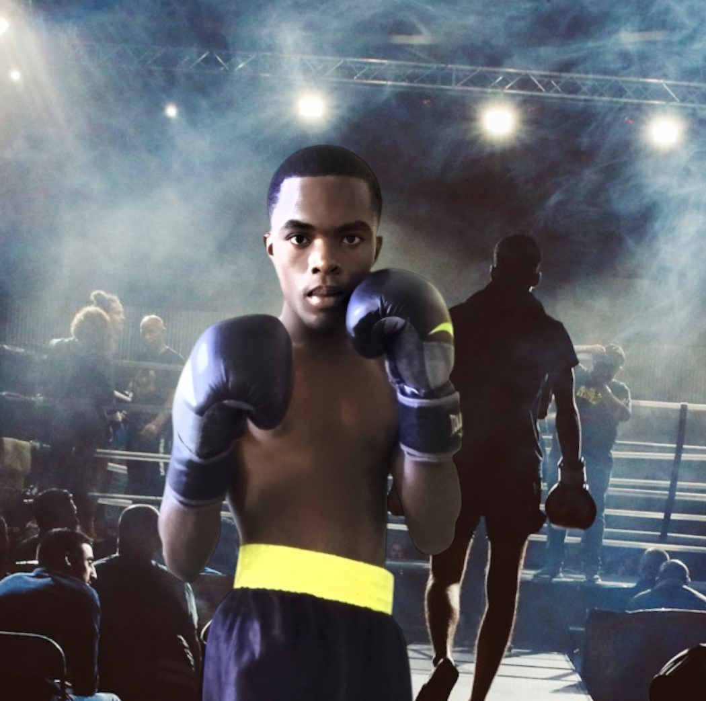

Le Sacerdoce d'un Bâtisseur
Un manifeste personnel sur la discipline, la transmission du savoir, la cybersécurité et la construction d'un avenir durable.
"Combattre avec honneur.
Protéger avec intelligence.
Construire avec discipline."
[ 01 ] Fiche Documentaire & Lecture
Consultez ou téléchargez l'archive intégrale directement depuis le laboratoire.
Le Sacerdoce
& Bâtisseur
Ce document pose les bases philosophiques et techniques de mon engagement. Il formalise la vision d'un administrateur système orienté vers la protection des infrastructures et l'exigence méthodologique.
[ 02 ] Chronologie du Parcours
Les jalons majeurs de la construction d'un profil technique.
Premières épreuves
Les premières épreuves forgent la résilience et la volonté de construire plutôt que subir.
Découverte de la boxe
Apprentissage de la discipline, de l'encaissement et de la lucidité sous pression.
Entrée à l'ISP
Formalisation des études supérieures en Informatique et Technologie à Mbanza-Ngungu.
Création du G-RIEL IT Garden
Mise en place du laboratoire personnel, automatisation et structuration des connaissances.
Master Télécommunications & Cybersécurité
Cap vers l'expertise avancée des réseaux et la sécurisation des infrastructures critiques.
[ 03 ] Rigueur & Rings
L'analogie permanente entre l'exigence du sport de combat et l'ingénierie système.

Résilience
Chaque obstacle sur un serveur se traite avec le même sang-froid.[ 04 ] Principes Directeurs
Les fondations éthiques et opérationnelles qui guident mon travail.
Mon Engagement
Je construis des systèmes fiables.
Je protège les infrastructures.
Je transmets les connaissances.
Je continue d'apprendre.
Parce que bâtir est plus durable que détruire.
Ce manifeste évoluera au fil de mon parcours, à mesure que mes connaissances, mes responsabilités et mes expériences grandiront.